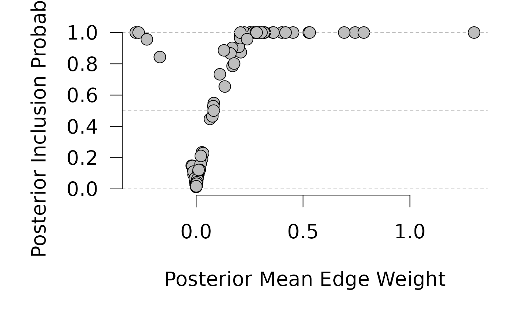
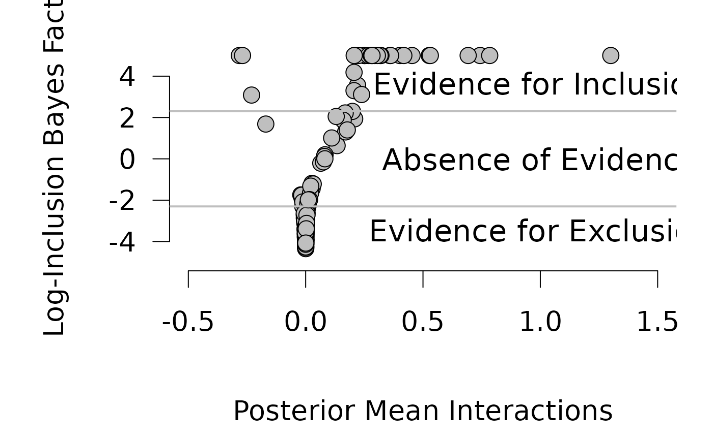
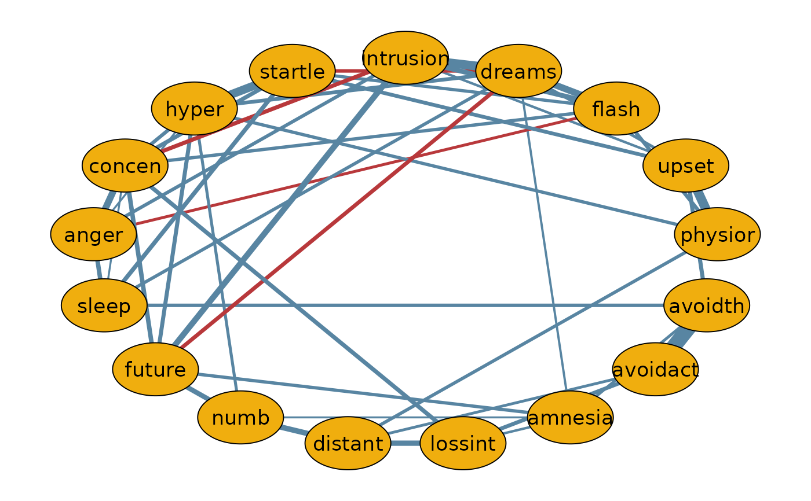

The bgm function estimates the pseudoposterior distribution of threshold and
pairwise interaction parameters in a Markov Random Field (MRF) model for binary and/or
ordinal variables. Optionally, it performs Bayesian edge selection using spike-and-slab
priors to infer the network structure.
Usage
bgm(
x,
variable_type = "ordinal",
reference_category,
iter = 10000,
burnin = 500,
interaction_scale = 2.5,
threshold_alpha = 0.5,
threshold_beta = 0.5,
edge_selection = TRUE,
edge_prior = c("Bernoulli", "Beta-Bernoulli", "Stochastic-Block"),
inclusion_probability = 0.5,
beta_bernoulli_alpha = 1,
beta_bernoulli_beta = 1,
dirichlet_alpha = 1,
lambda = 1,
na_action = c("listwise", "impute"),
save = FALSE,
display_progress = TRUE
)Arguments
- x
A data frame or matrix with
nrows andpcolumns containing binary and ordinal responses. Binary and ordinal variables are automatically recoded to non-negative integers (0, 1, ..., m). For regular ordinal variables, unobserved categories are collapsed; for Blume-Capel variables, all categories are retained.- variable_type
Character or character vector. Specifies the type of each variable in
x. Allowed values:"ordinal"or"blume-capel". Binary variables are automatically treated as"ordinal". Default:"ordinal".- reference_category
Integer or vector. Reference category used in Blume-Capel variables. Can be a single integer (applied to all) or a vector of length
p. Required if at least one variable is of type"blume-capel".- iter
Integer. Number of Gibbs sampling iterations. Default:
1e4. For stable estimates, consider using at least1e5.- burnin
Integer. Number of burn-in iterations before saving samples. When
edge_selection = TRUE, the function runs2 * burniniterations: first half without edge selection, second half with edge selection. Default:1e3.- interaction_scale
Double. Scale of the Cauchy prior for pairwise interaction parameters. Default:
2.5.- threshold_alpha, threshold_beta
Double. Shape parameters of the beta-prime prior for threshold parameters. Must be positive. If equal, the prior is symmetric. Defaults:
threshold_alpha = 0.5andthreshold_beta = 0.5.- edge_selection
Logical. Whether to perform Bayesian edge selection. If
FALSE, the model estimates all edges. Default:TRUE.- edge_prior
Character. Specifies the prior for edge inclusion. Options:
"Bernoulli","Beta-Bernoulli", or"Stochastic-Block". Default:"Bernoulli".- inclusion_probability
Numeric scalar or matrix. Prior inclusion probability of each edge (used with the Bernoulli prior). A single value applies to all edges; a matrix allows edge-specific probabilities. Default:
0.5.- beta_bernoulli_alpha, beta_bernoulli_beta
Double. Shape parameters for the beta distribution in the Beta-Bernoulli prior. Must be positive. Defaults:
beta_bernoulli_alpha = 1andbeta_bernoulli_beta = 1.- dirichlet_alpha
Double. Concentration parameter of the Dirichlet prior on block assignments (used with the Stochastic Block Model). Default:
1.- lambda
Double. Rate of the zero-truncated Poisson prior on the number of clusters in the Stochastic Block Model. Default:
1.- na_action
Character. Specifies missing data handling.
"listwise"deletes rows with missing values."impute"imputes missing values during MCMC. Default:"listwise".- save
Logical; deprecated. Whether to return all sampled states from the Gibbs sampler. If
FALSE, only posterior means are returned. Default:FALSE.- display_progress
Logical. Whether to show a progress bar during sampling. Default:
TRUE.
Value
A list of class "bgms" containing posterior summaries or sampled states, depending on the save option:
If save = FALSE (default), the list contains model-averaged posterior summaries:
indicator: Ap × pmatrix of posterior inclusion probabilities for each edge.interactions: Ap × pmatrix of posterior means for pairwise interactions.thresholds: Ap × max(m)matrix of posterior means for threshold parameters. For Blume-Capel variables, the first entry corresponds to the linear term and the second to the quadratic term.
If save = TRUE, the list also includes raw MCMC samples:
indicator: A matrix withiterrows andp × (p - 1) / 2columns; sampled edge inclusion indicators.interactions: A matrix withiterrows andp × (p - 1) / 2columns; sampled interaction parameters.thresholds: A matrix withiterrows andsum(m)columns; sampled threshold parameters.
If edge_prior = "Stochastic-Block", two additional components may be returned:
allocations: A vector (or matrix ifsave = TRUE) with posterior cluster assignments for each node.components: A matrix of posterior probabilities for the number of clusters, based on sampled allocations.
Column-wise averages of the sampled matrices yield posterior means, except for allocations, which should be summarized using summarySBM().
The returned list also includes some of the function call arguments, useful for post-processing.
Details
This function models the joint distribution of binary and ordinal variables using a Markov Random Field, with support for edge selection through Bayesian variable selection. Key components of the model are described in the sections below.
Ordinal Variables
The function supports two types of ordinal variables:
Regular ordinal variables: Assign a threshold parameter to each response category except the lowest. The model imposes no additional constraints on the distribution of category responses.
Blume-Capel ordinal variables: Assume a reference category (e.g., a “neutral” response) and score responses by distance from this reference. Thresholds are modeled quadratically:
$$\mu_{c} = \alpha \cdot c + \beta \cdot (c - r)^2$$
where:
\(\mu_{c}\): threshold for category \(c\)
\(\alpha\): linear trend across categories
\(\beta\): preference toward or away from the reference
If \(\beta < 0\), the model favors responses near the reference category;
if \(\beta > 0\), it favors responses farther away (i.e., extremes).
\(r\): reference category
Edge Selection
When edge_selection = TRUE, the function performs Bayesian variable selection
on the pairwise interactions (edges) in the MRF using spike-and-slab priors.
Supported priors for edge inclusion:
Bernoulli: Fixed inclusion probability across edges.
Beta-Bernoulli: Inclusion probability is assigned a Beta prior distribution.
Stochastic Block Model: Cluster-based edge priors with Beta, Dirichlet, and Poisson hyperpriors.
All priors operate via binary indicator variables controlling the inclusion or exclusion of each edge.
Prior Distributions
Interaction parameters: Modeled with a Cauchy slab prior.
Threshold parameters: Modeled using a beta-prime distribution.
Edge indicators: Use either a Bernoulli, Beta-Bernoulli, or SBM prior (as above).
Gibbs Sampling
Parameters are estimated using a Metropolis-within-Gibbs sampling scheme.
When edge_selection = TRUE, the algorithm runs 2 * burnin warmup iterations:
First half without edge selection.
Second half with edge selection enabled.
This warmup strategy improves stability of adaptive Metropolis-Hastings proposals and starting values.
Missing Data
If na_action = "listwise", observations with missing values are removed.
If na_action = "impute", missing values are imputed during MCMC.
Examples
# \donttest{
# Store user par() settings
op <- par(no.readonly = TRUE)
# Run bgm on the Wenchuan dataset
# For reliable results, consider using at least 1e5 iterations
fit <- bgm(x = Wenchuan, iter = 1e4)
#> Warning: There were 18 rows with missing observations in the input matrix x.
#> Since na_action = listwise these rows were excluded from the analysis.
#--- INCLUSION VS EDGE WEIGHT ----------------------------------------------
edge_weights <- fit$interactions[lower.tri(fit$interactions)]
incl_probs <- fit$indicator[lower.tri(fit$indicator)]
par(mar = c(5, 5, 1, 1) + 0.1, cex = 1.7)
plot(edge_weights, incl_probs,
pch = 21, bg = "gray", cex = 1.3,
ylim = c(0, 1), axes = FALSE,
xlab = "", ylab = "")
abline(h = c(0, 0.5, 1), lty = 2, col = "gray")
axis(1); axis(2, las = 1)
mtext("Posterior Mean Edge Weight", side = 1, line = 3, cex = 1.7)
mtext("Posterior Inclusion Probability", side = 2, line = 3, cex = 1.7)

#--- EVIDENCE PLOT ----------------------------------------------------------
prior_odds <- 1
post_odds <- incl_probs / (1 - incl_probs)
log_bf <- log(post_odds / prior_odds)
log_bf <- pmin(log_bf, 5) # cap extreme values
plot(edge_weights, log_bf,
pch = 21, bg = "#bfbfbf", cex = 1.3,
axes = FALSE, xlab = "", ylab = "",
ylim = c(-5, 5.5), xlim = c(-0.5, 1.5))
axis(1); axis(2, las = 1)
abline(h = log(c(1/10, 10)), lwd = 2, col = "#bfbfbf")
text(1, log(1 / 10), "Evidence for Exclusion", pos = 1, cex = 1.1)
text(1, log(10), "Evidence for Inclusion", pos = 3, cex = 1.1)
text(1, 0, "Absence of Evidence", cex = 1.1)
mtext("Log-Inclusion Bayes Factor", side = 2, line = 3, cex = 1.7)
mtext("Posterior Mean Interactions", side = 1, line = 3.7, cex = 1.7)

#--- MEDIAN PROBABILITY NETWORK --------------------------------------------
median_edges <- ifelse(incl_probs >= 0.5, edge_weights, 0)
n <- ncol(Wenchuan)
net <- matrix(0, n, n)
net[lower.tri(net)] <- median_edges
net <- net + t(net)
dimnames(net) <- list(colnames(Wenchuan), colnames(Wenchuan))
par(cex = 1)
if (requireNamespace("qgraph", quietly = TRUE)) {
qgraph::qgraph(net,
theme = "TeamFortress", maximum = 0.5, fade = FALSE,
color = "#f0ae0e", vsize = 10, repulsion = 0.9,
label.cex = 1.1, label.scale = FALSE,
labels = colnames(Wenchuan)
)
}

# Restore user par() settings
par(op)
# }